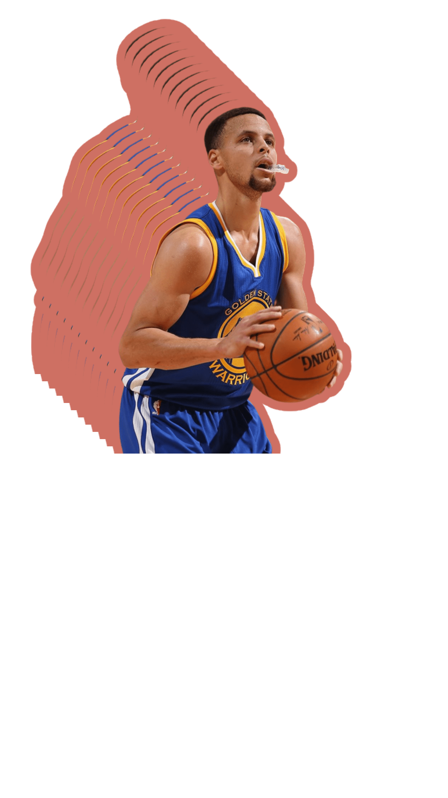
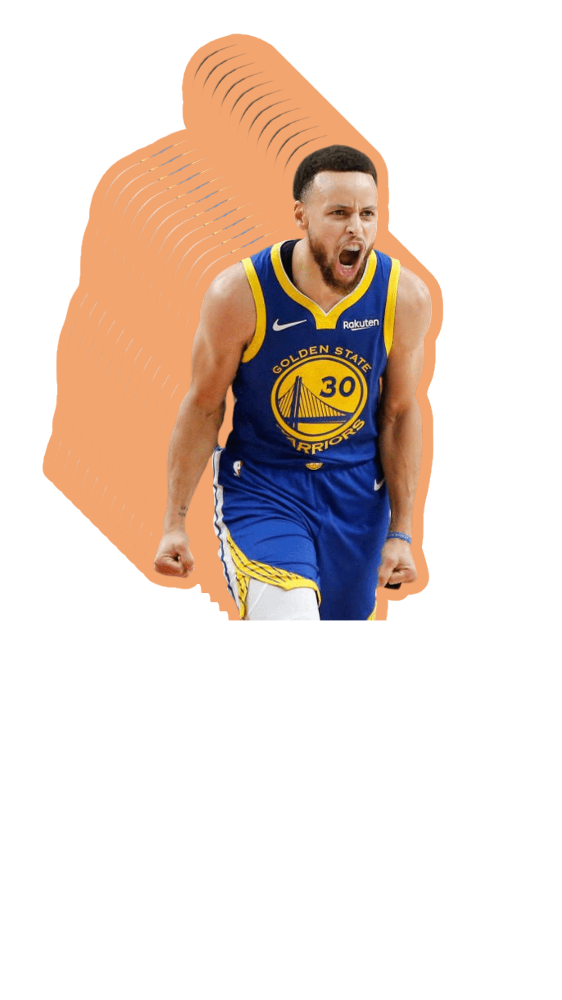
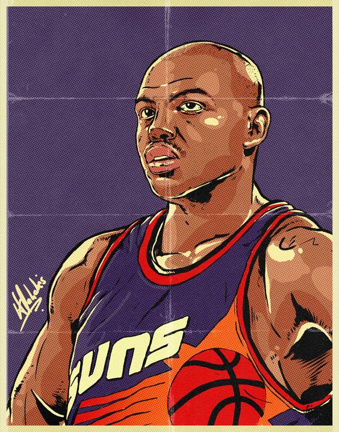
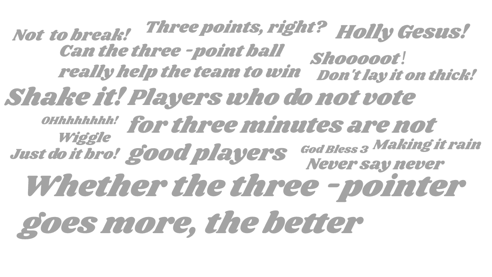
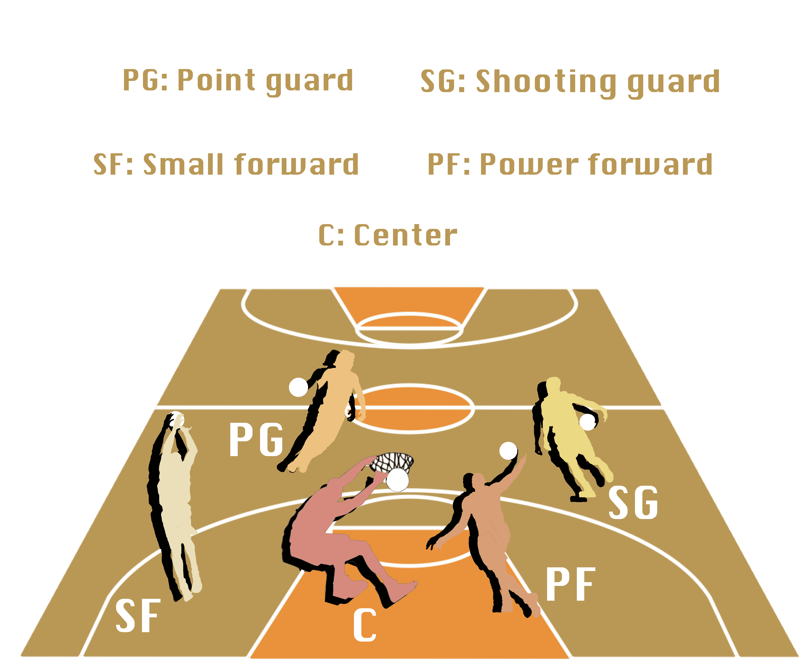

Is raining threes worth it?
An exploration of 3-points ball at NBA.
In the last years the NBA has changed dramatically.
The playstyle is now more oriented toward early three point shot and fast offensive transitions.
Many analyst have been wondering if this basketball revolution benefits to the show and helps the team to win the matches.
Scroll to continue
To examine this further, let's explore the famous NBA basketball idol Stephen Curry first.
Stephen Curry , A three-pointer-kicking idol, a legendary figure
Click on the chart to see the 3-pointer ball shots data of Stephen Curry.


Let's take a closer look into the 3-pointer ball trend!
In this river diagram, the upper block represents the 3P% data in the 1980-2016 game seasons.
While the lower block represents the 3PA data along all the same historical seasons.
3PA : 3-pointer balls attempted 3P% : the percentage of 3-pointer balls scored by those attempted


Can 3-pointer help team win?
Hover on the dots to see 3PA and 3P% of team wins and lose in the finals between 2003-2020 .
Let's take a look at 3-points ball in the NBA Finals.
Players are always exposed to intense and fierce physical play in th NBA Finals. 3-points ball can help you go big or go home.
Click on the table to see the change players shoot 3-points ball between 1980-2018.
Do the players who prefer to make three-pointers earn more?
rocket_launch
We collect the 3-pointers data, salary, and their Twitter account views and praise of their players. Perhaps there is a relationship between these factors...?
Click on the dots to see relation between 3-pointers shooters and their social impact in the season 2016-2017.
How players of five positions differ in 3-pointers shot?
Basketball is a team sport and players are generally divided into five positions to play different tactical roles on the court.
Hover on the table to see the position difference in 3P% and 3PAr between 1980-2017.

Can three-pointers set off the same boom in different ages? Let's show it!
Are you curious about the favours of 3-pointers balls among different ages players?
You can click on the four roses below to check and find the result!
About this Project
Our Team
Ryan Fang
Ryan is a senior year undergraduate in ZJU concentrating in Crypto and computer technology.
Vann Tang
Vann is a senior year undergraduate in ZJU concentrating in Robotics and Contrl Science.
Notes
1. We would like to take special note to dig into the relation between the success of a NBA player and 3-pointer ball. Motivated by the fantastic performance by Stephen Curry, all of us three and many other boys pay more attention to the 3-pointer balls when we play basketball. The power of a superidol is huge. As a result, We want to do some research, data analyst and visualization.
2. Our visualizations are based on publicly available data and information; any and all potential errors reflect those of these online resources.
References
- Data on shots taken during the 2014-2015 season.
- NBA 3 Point Percentages Through the Years : 1950-2017 season.
- Data about NBA on the court performance with Social Influence, Popularity and Power Social Power NBA
- NBA 16/17 Season Analysis : Data on 2016-2017 season
- It's raining threes in NBA: is it worth it?
- Three pointers win championships: EDA and predicti.
- NBA Finals Three Point Stats, 1980-2017.
- Datasets for the 2013 through 2021 seasons College Basketball Dataset.
- W.O.W. Where are Our Women?